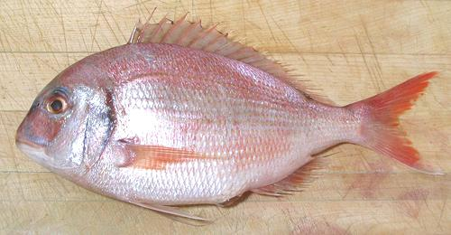

Silver Seabream

[Squirefish, Pink Snapper, New Zealand Snapper, Australian
Snapper; Pagrus auratus; invalid Chrysophrys auratus]
This Porgy is often sold in North America as "New Zealand Snapper" or
"Pink Snapper", though it isn't a snapper nor closely related to them.
It is found off the coasts of Australia and New Zealand. A distinctly
separate population is found from northern Vietnam to southern Japan.
Farming this fish is in the development stages (2015) so some market
fish may be farmed.
This fish can reach 51 inches and 44 pounds, but is
more commonly around 16 inches. The photo specimen was 12 inches
long and weighed 1 pound 1 ounce. This fish is IUNC listed as DD
(Data Deficient), but is not considered threatened.
Caution: The false name "Snapper" and reddish color allows
this fish to be sold at a premium price, but it's not a snapper. It has
excellent flavor, but has limitations that may make it not worth so
high a price to you.
More on Porgy / Seabream Family.
Regardless of how it may be labeled, this fish is not a snapper.
It's flavor is very good, but it's cooking characteristics are not
the same as a real Snapper. it's flesh is mild with excellent flavor,
but the flesh is so tender it cannot be used for many forms of cooking.
Any kind of wet cooking is out of the question, the flesh will just
fall apart. Skin shrink is sufficiently severe, and the flesh so tender,
it must be skinned for applications like pan frying, but the skin may be
all that's holding the fillet together.
This fish can be baked or steamed whole or pan dressed, but the head
is very large so pan dressed would be better.
Buying:
This fish is quite common in the Asian markets
here in Southern California, usually sold as "Pink Snapper", "New Zealand
Snapper" or "Snapper from New Zealand". The photo specimen, purchased
from a Philippine market in Los Angeles, was 2016 US $7.99 / pound, and
low yield exaggerates that high price.
Scales:
This fish is completely covered with moderate
size scales with medium adhesion. They will fly about a fair amount
when scraping them off.
Cleaning:
Nothing unusual here, except handle the fish
very gently because of the tender flesh. The gills are a little
hard to get at, so use your long nose pliers.
Skin:
The skin shrinks strongly when cooked, so it must
be removed from fillets or they'll curl up - but the flesh is so tender
the skin may be all that's holding a fillet together. It does soften
by time cooking is complete. For baking, broiling or steaming or
grilling, make diagonal slashes through the skin every inch or so.
Fillet:
This is a fairly easy fish to fillet with a
coherent, easy to follow bone structure - but, the tender flesh can
take no abuse at all, so be very gentle. Cut down to the backbone, then
over the backbone at the tail and forward. When you get to the rib cage,
use kitchen shears to cut the ribs from the backbone, then pull them from
the fillet with long nose pliers. There are a few substantial centerline
pin bones which must be pulled for the length of the body cavity. The
skirt will probably pretty much fall apart, so just cut it from the fillet
and toss it in the stock pot.
Yield:
A 1 pound 1 ounce fish yielded just 6-3/8 oz of
skink-on fillet (38%) because of its heavy head and bone structure.
Skinless this was 5-7/8 ounces (35%). Low yield is to be expected in a
fish that makes its living grinding up starfish, sea urchins and
crustaceans.
Stock:
The heads, bones, fins and skins make an
excellent light stock suitable for soups, needing no other flavor than
a little salt, though it is somewhat cloudy. Remove the small amount of
oil using your gravy separator. For details see our
Making Fish Stock page.
sf_squirez 060606 r 160116 - www.clovegarden.com
©Andrew Grygus - agryg@clovegarden.com - Photos
on this page not otherwise credited © cg1
- Linking to and non-commercial use of this page permitted